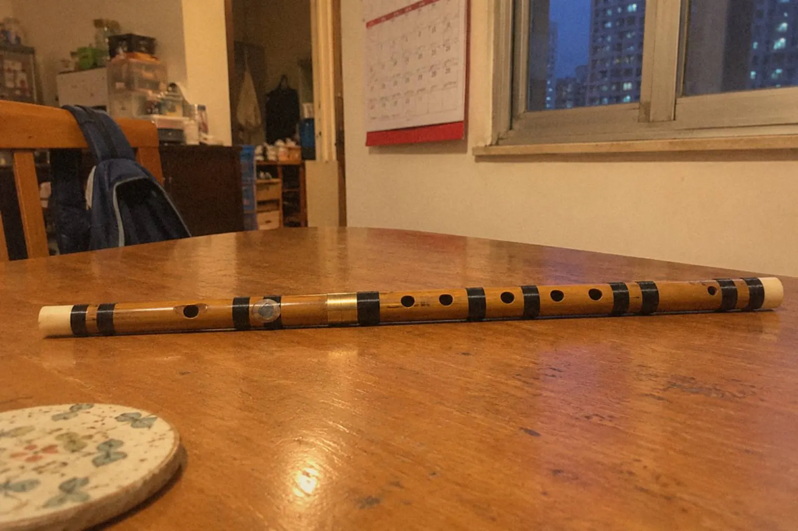
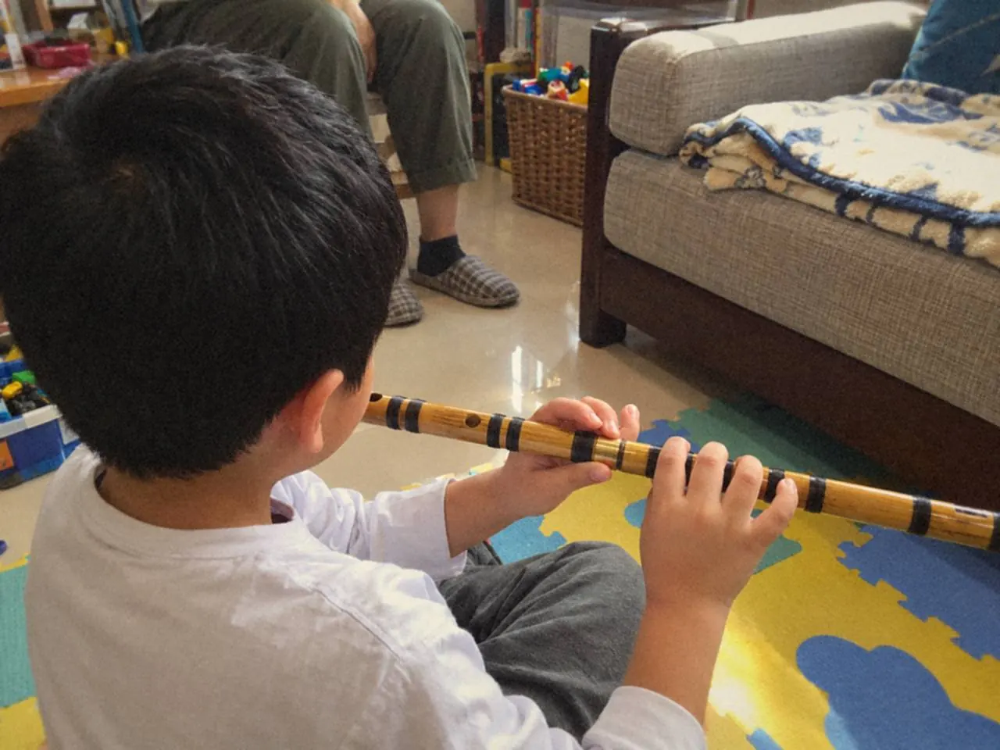
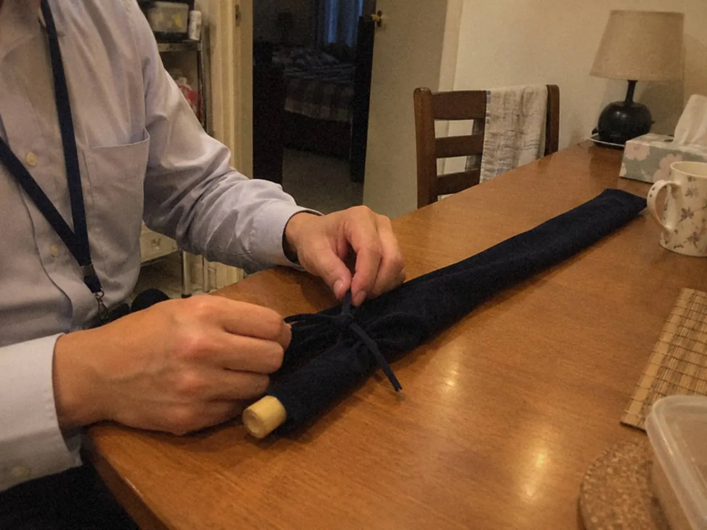
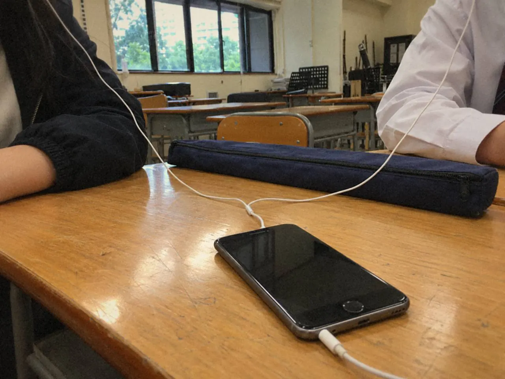

孩子吹不響，把笛放下，說不想學了。這樣的情況我見過不少。原因很少是「不喜歡笛子」——通常是第一個音一直不肯出來，試了十次八次，人就洩氣。

成人那邊，情況相似，形態不同。下班回家，打開笛盒，想到隔壁會聽見，手指在笛身上放了幾秒，又把盒蓋輕輕合上。一合，就是幾個月。
兩種開始，看着是兩回事，要處理的其實是同一件事：把第一步縮小到做得到。
先有興趣，還是先練基本功
這個問題，家長問了二十年，答案仍然是：不必二選一。
孩子肯練，通常是因為他聽得出自己在做甚麼。老師吹一句，他跟着吹；兩個音一問一答，像說話。這種遊戲看起來不像練基本功，其實正在練：聽音、等拍、控制那一口氣。

基本功失敗的地方，往往不在難度，而在份量。一次給三個要求——嘴形、手指、拍子——孩子只會記得最嚴厲的那一句。一次只留一個，例如「第二個音要接得清楚」，做到了再加第二項。
孩子做不到，先縮短任務，或者改用拍手。同一句指令越說越大聲，是最沒有效果的一種加碼。欲速不達，說的就是這一刻。
課堂上，我會先看孩子能否用笛子完成一個清楚的指令，再把同樣的事變成家中的短任務。笛子合不合手也要一併看：孔距太闊，手指伸到極限才按得實，吹得響也撐不久。
家長回家只看一個目標，長音、口風、手指或拍子挑一項。做到了就停，不要順手多改兩處。
結束前，讓孩子指出今天做得到的一件事，再把同樣形式的短練習留給他。這種清楚的小成功，會替日後需要耐性的基本功留一點空間。家長陪練的其他問題，可看家長學習指南。
成人由零開始，時間從哪裏來
成人最現實的問題是時間，其次是怕。怕吹不響，怕隔壁聽見，怕學了三個月還在吹長音。
一天十分鐘，其實夠用。工作天只做一個小任務：封孔、口風、一個換指，或者一段長音。週末有整塊時間，才連回曲目。這樣排，比「有空就練兩小時」容易維持得多——一曝十寒，練得久不如練得密。

十分鐘可以這樣分：
- 頭兩分鐘：笛膜、樂器位置、坐姿，先安頓好
- 中間四分鐘：容易的短音和封孔
- 後四分鐘：一個換指，或一句旋律，錄一次
聲音累了就停，轉做讀譜或者聽錄音。為了填滿時間表而硬吹，第二天只會更不想開盒。
怕吹不響的感覺，可以換成具體的觀察：哪個角度容易漏氣，哪個孔按不實，哪一口氣太淺。有了具體的問題，就有可以改的地方；「我沒有天分」這句話，改不了任何東西。
每天不必追求很多新音，先讓已經找到的聲音穩定重複。同一句旋律，一週回看一次，錄下來比較。成人初學的其他問題，可看成人音樂入門。
一對一課堂，應該有這四樣
一堂課只學新曲，看起來進度快，基本功卻會慢慢散。反過來，一堂課由頭到尾只做長音，學生又會覺得交了學費在原地踏步。
我通常保留四樣：基本功、曲目、聆聽、回家任務。比例按人調，有時整堂花在音頭和笛膜，有時整堂追一句走了樣的旋律。
下課前那五分鐘最關鍵。「多練一點」這種話帶回家沒有用。要講到可以照做：練哪一段、留意甚麼、做到甚麼程度才接下一步。
最好的檢查，是請學生用自己的話重述一次。說不清楚，就當堂再示範一次。這五分鐘花得值，比多教一首曲值得。
隔週帶一段錄音回來，加上一兩個具體問題：「這句換氣位對不對」、「為甚麼高音會破」，比「吹得不好」有用得多。師生一起聽，通常聽到不同的東西——他聽見錯處，我聽見他為甚麼會這樣吹。

一對一的價值，就在這種一來一回裏慢慢累積，而不是在課時長短。查詢時說清程度、手上有沒有笛子、實際可練習的時間，比較容易討論合適的方向；上課路線怎樣安排，也值得先問一句。
常見問題
小朋友吹不響笛子，要停下來嗎？
不用急着停。先縮短任務，或改用拍手和兩音遊戲，同時看看笛子是否合手。每次只留一個要求，通常兩三堂就會鬆動。
成人每天只有十分鐘，學得到笛子嗎？
十分鐘足以建立節奏。工作天只做一個小任務，週末再連回曲目。進度因人而異，我不會說每個人都一樣快。
第一次查詢笛子課，要準備甚麼？
說清楚程度、手上有沒有笛子，以及實際可練習的時間。有想吹的曲，也可以一併提出。
如果你正在考慮開始，先打開日曆，看看下星期哪三段時間真的空得出來。笛子可以遲一步再買，時間表不行。課程安排在笛子課程；還未有笛，可先讀第一支笛子：D、G 還是 F 調。